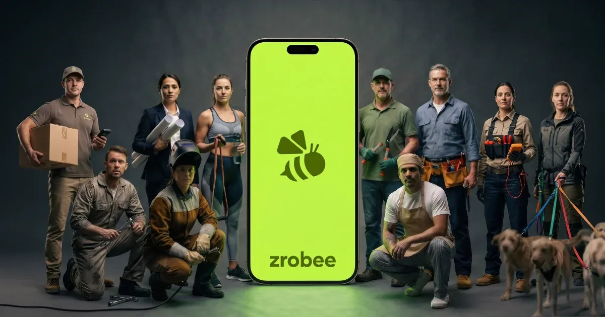

Vlastní produkt · spoluzakladatel
Zrobee
České tržiště služeb. Zákazník zadá poptávku a profesionálové z okolí mu pošlou nabídky s cenou. Od řemesel a úklidu po hlídání dětí, doučování nebo grafiku.
zrobee.cz- Dvě strany trhu
- Oddělené cesty pro zákazníky a profíky: poptávky, nabídky, zprávy a profily.
- Kreditový systém
- Zákazník neplatí nic. Profík platí kredity jen za nabídku na zakázku, kterou si sám vybere.
- Ověřování profilů
- U profilu je vidět, co bylo ověřeno: doklad totožnosti, telefon, živnost v registru ARES a pojištění.
- Obsah pro vyhledávače
- Stránky jednotlivých služeb, oborů a průvodci, kteří přivádějí zákazníky i profíky z vyhledávání.
Na Zrobee každý den řeším totéž, co potřebují náročnější klientské projekty: uživatelské účty, kredity, databázi, administraci, e-maily a provoz, který nesmí vypadnout.